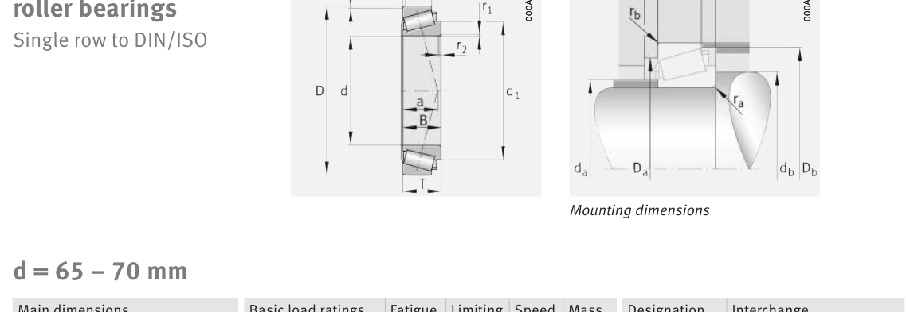

Original catalogue drawing - FAG Schaeffler HR 1, page 596

Scanned from the manufacturer catalogue page listing this part number. All part numbers printed on that table share the same drawing.
Scale cross-section
Blue = inner / outer ring, yellow = rolling element. Drawn to scale from this part's own
dimensions for selection reference only - not a manufacturing or assembly drawing.
Dimension table (mm / inch)
Symbol
Dimension
mm
inch
d
Bore diameter
70
2.7559
D
Outside diameter
130
5.1181
B
Inner-ring / bearing width
42
1.6535
T
Overall assembly width
43
1.6929
C
Cup / outer-ring width
35
1.378
Notes
Weights are given in kg. Load ratings are shown in both the original catalogue units and the converted value (1 N = 0.2248 lbf). Data is provided for selection reference only - confirm against the latest official catalogue before ordering.
Main dimensions
Bore d (mm)
70
Outside dia. D (mm)
130
Width B (mm)
42
Overall width T (mm)
43
Cup width C (mm)
35
Inner-ring OD d1 (mm)
99.6
Load ratings & speeds
Basic dynamic load rating Cr (lbs)
50582
Basic static load rating Cor (lbs)
69691
Basic dynamic load rating Cr (N)
225000
Basic static load rating C0r (N)
310000
Basic dynamic axial rating Ca (N)
7
Fatigue limit load Cur (N)
39000
Factor e
0.33
Factor Y
1.8
Factor Y0
0.99
Limiting speed nG (rpm)
5,300
Reference speed nB (rpm)
3,550
Effective load centre a (mm)
31
Weight
Weight (kg)
2.52
Mounting dimensions (fillets / shoulders)
Chamfer r2 min (mm)
3
Shaft shoulder da (mm)
80
Shaft shoulder db (mm)
85
Housing shoulder Da (mm)
111
Housing shoulder Db (mm)
123
Housing fillet ra max (mm)
3
Fillet rb max (mm)
2.5
Bearing life (ISO 281 basic rating life)
C / P
Equivalent load P (N)
L10 (106 rev)
L10h at 1,700 rpm
4
56,250
102
996
6
37,500
392
3,848
8
28,125
1,024
10,039
10
22,500
2,154
21,122
15
15,000
8,323
81,603
Basic rating life per ISO 281: L10 = (C/P)10/3 with C = 225,000 N. Hours = L10 x 106 / (60n). Life-modification factors for lubrication, contamination and temperature (aISO) are not included.
Source & traceability
Brand
FAG
Source catalogue
FAG / Schaeffler Rolling Bearings HR 1
Catalogue page
p.596 (dimensions)
Load ratings in newtons, fatigue limit load Cur, limiting speed nG and reference speed nB.
Send us the quantity you need and we will come back with price and
lead time, normally within 24 hours. Equivalent parts from other brands can be quoted at the same time.